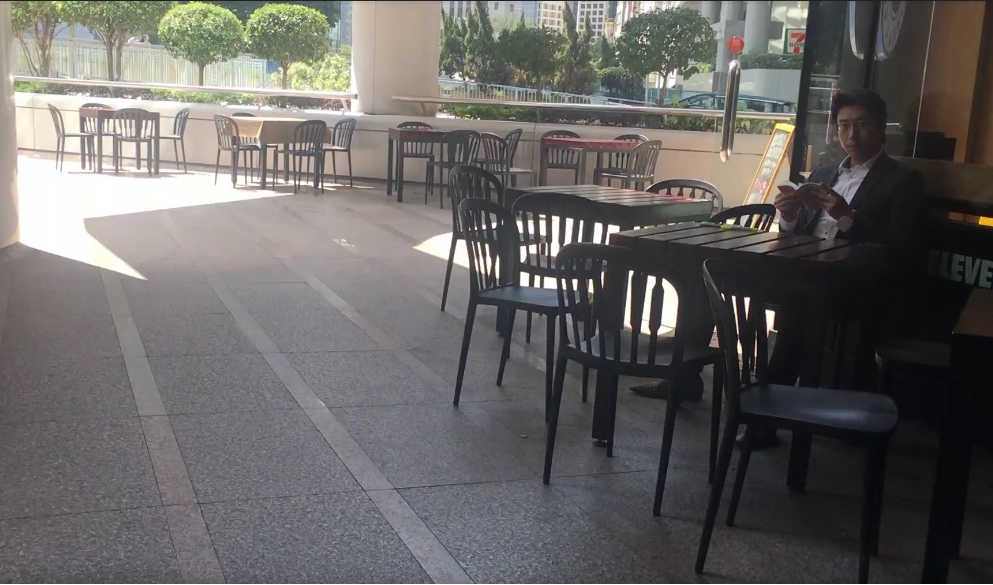

There lies a space with 7,000 m² at Nam Shan Road, 30 minutes away from Tai Po Market, where you can have a football match in a vast grassland, jog at the hiking trail and even hold a barbecue party with two pits provided.
It is just one of the rare spacious examples. Yet people can still stretch their legs freely in smaller open spaces within the city centre.
There are 62 public open spaces in private developments (POSPDs) under lease for the use by the public since 1980, in an attempt to better the urban environment by increasing the public accessibility. Loopholes were seen early in 2008 when the public open space outside Time Square was abused by a property management company and caused public rage. Government then reviewed upon the policy and set up guidelines for the design and management of the public spaces.
Still, the public find it challenging to differentiate one.
The signs indicating public spaces are ambiguous. People can hardly tell if they can use the piece of land since these free spaces are located near private sectors. Outside the building of Communication and Visual Arts Building of Hong Kong Baptist University, there are staircases, an installation art and a nice artificial pond for people and animals to take a rest. Yet, people do not know that indeed they possess the right to picnic there. No sign or notice can be seen of pointing the designated area. Not merely in institutes, free spaces in residential and commercial area are not well specified. Podium Garden, another welcoming place for all, is right next to a public park. The fine line between the two parks confuses people if they have to beware of trespassing the “private side” (Royal Peninsula). Some users said that they have misperceived them as part of the exclusive area.

Public space users may still meet difficulties accessing the free areas in spite of the provision of signs. Some of the spaces are especially hard to keep track of when they are located storeys above. Example as the one inside Royal Ascot 1, users have to first cross a mini mall and then take some lifts. Since the directions are not seen from step to step, users somehow get lost from where they are.
 |
 |
|---|
Locations are not the only physical impediment. There are scenarios that people are barred from using open spaces by unknowing security guards. From the list provided by the Land Department, a space sprawling 3,518 m² of The Belcher's, a private residential area near The University of Hong Kong, should be open for public. Asked about the area, a female guard near the entrance of the residential building said that she had no clue about where it was. Right next to the watchwoman, a playground with recreational facilities suspected for public was surrounded by fences. It was inaccessible without a resident ID. She said even she did not have a card to let her move to and fro.

Another public platform on the fifth floor of Hollywood Terrace obviously welcomes everyone to enter with a sign. Yet, a woman security guard on the ground floor refused any non-residents in despite the name-showing list. In sight of the information, she insisted no space open for public nonetheless. Same story happened in Eastern district. "All is private space," said a guard of The Orchards.

Some public space is occupied by commercial uses. The public space of Lippo Centre connects the centre and a pedestrian bridge. Some chairs and tables of a coffee shop right next to are sitting in the public space. Similar situation is seen on Lee Tung Avenue, which it was taken up some spaces by a cafe. However, we cannot verify if the two eateries have violated the clause under lease as we do not have the access to the official lease between the government and the property owners.
In sight of all the suspected misuse of public space, the government official dragged their reply. “We’ve received your request and we have delegated to the information unit. But I don’t know who is following up. You better call them,” said an official of the Building Department when asked about the responsibility on the surveillance.
This long-rooted issue has been kept an eye on by several organisations. The public space parameter is to heighten public involvement but the consultation is doing the other way round, said Anthea Cheung, public relations manager from Hong Kong Public Space Initiative. “The planning is all depended on the property owner,’ she said.
Echoing the view, Paul Zimmerman, chief executive officer of Designing Hong Kong suggested a solution that the government does not deal with the developers on the public space or the public passage on the building but let the public comment on it. “Then it is not just between the bureaucrat and the developer,” he said.
The violation on the provision of public space can face legal consequences. Metro Harbour Plaza applied for exemption right after being discovered of failing of rendering public space. In the middle of the long process of the application, they still have reinforced the indication of open space and the facilities for public. The owners of the undiscovered susceptible areas should follow suit out of this precedent, and out of their obligation.